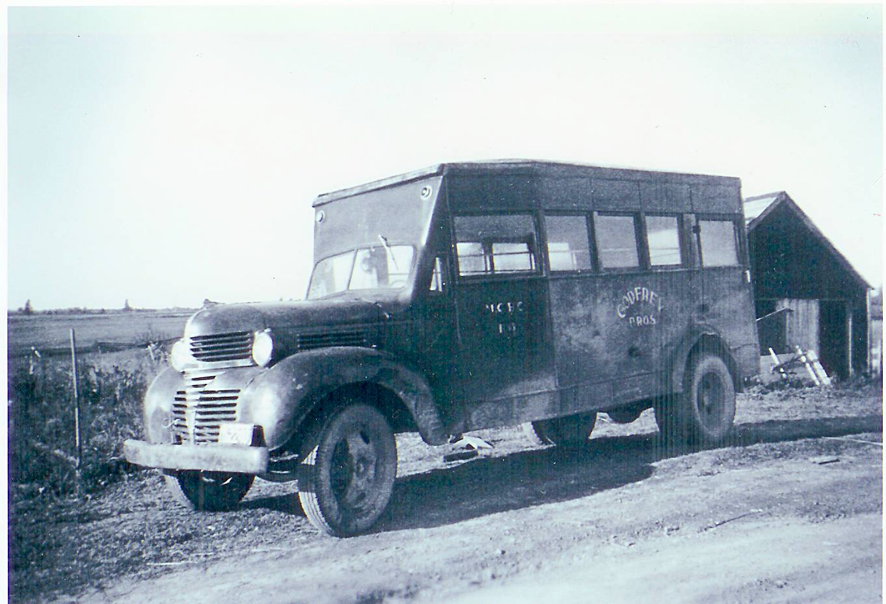

The Family Chronicle
No. 111 January 14, 2006
____________________________________________________________________
First school bus

The first school bus serving the
Miramichi Rural High School
(Photo courtesy Myrtle (Dick) Allen
Some readers will recall that the first high school classes in the area were held in the Anglican Rectory in Bay du Vin and later in the Bay du Vin hall. My siblings, Norm, Ken and Elinor actually walked the five miles each way each day, biked or traveled by horse and sled although Elinor, who was the first to go to school in Bay du Vin, stayed during the winter months at Goymer Williston’s. I mentioned in an earlier newsletter.
The first school transportation, Ken remembers was a “big” truck, 2-3 ton with a box on the back, operated by Goymer Williston; it picked up students from Black River, and presumably from the other districts as well, and transported them to Bay du Vin.
By the fall of 1940 classes had moved
to the new Miramichi Rural High School, the first of some fifty rural high schools built throughout New Brunswick. Eddie Godfrey believes that the Godfreys began operating a school bus, pictured on the left, in the fall of 1940: thanks to Eddie also for the following information.
The bus shown on the left was built on a one and one-half ton Fargo chassis purchased, he believes, from the W.S.Loggie Co. Their second bus, purchased in 1944 at St. John, NB was khaki colour (a wartime colour); the third bus was a 21/2 ton Fargo, blue and white, built in Levis, PQ; their final bus was a 1947 International built in Saint John. The Godfrey Bros. ended their business in 1955 and the remaining buses were sold.
When the Godfrey Bros. purchased their second bus, the one pictured above was sold to Gordon Dick of Upper Napan and used to transport students from Napan and Point aux Carr to school in Chatham. Those communities were not part of the MRHS school district.
Family Chronicle No. 66 includes a photo of the first school bus operated by Tom Adams.
Christmas books
I was doing some sorting over the Christmas period and came across the following books received as Christmas gifts many years ago:
1940 – Donald Price Victory by L.P. Wyman, a gift from my Mother
1941 – In the Camp of the Black Rider by Capwell Wyckoff, a gift from Walter, Agnes and Stephen
1941- The Ski Patrol by Roy Snell, a gift from Lillian and John Ellery
As I recall one year, 1941, I received seven books: I did not do many chores during that Christmas break and actually recall comments about “having my head stuck in a book.” Just for the fun of it, I reread these books in recent days.
The Italian Armada
Some may recall my mention of the Italian Armada in Newsletter No. 66.
A recent book by Dundurn Press, McCully’s New Brunswick, shows actual photos of the Armada off Shediac in 1933. Shediac was a refueling stop for aircraft, flying boats, between Europe and North America; other stops included Holland, Iceland, and Labrador. On July 13, 1933, 24 Sovoja Marchetti S55 flying boats landed in Shediac Bay under the command of General Balboa. The Armada was on the way to Chicago to attend the Century of Progress Exposition. The following day, Italian Armada Day, Shediac was a bedecked city, with a giant parade and even traffic jams.
Reminiscing
I was talking with someone recently about pouring cement and he recalled, and I remember, that cement for basements walls and floors was mixed by hand and moved by wheel barrow. Furthermore, field stone was often buried in the cement in order to strengthen the wall or floor. Cement would not adhere to a dry stone so each stone was dipped in water before being put into the cement. One also had to be sure that the stone was in the centre of the wall and not touching the concrete form. The quality and strength of cement today no longer requires this to be done.
Happy New Year
The Family Chronicle (Copyright) is an occasional newsletter published by Don Glendenning and posted on the family website. It is intended to share information about my family, community and the times in which I grew up. While every effort is made to be accurate, errors are likely to occur. Comments, enquiries and information may be sent to 62 Queen Elizabeth Drive, Charlottetown, PEI, C1A 3A9. Tel: 902 892 5859. Email: dglende@auracom.com Web: www.glendenning.net/don